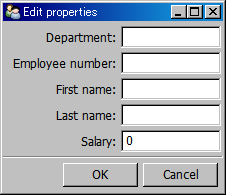
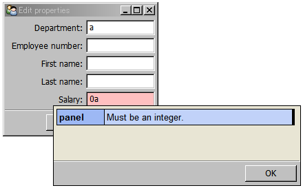
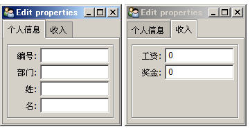
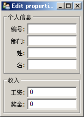

TraitsUI-轻松制作用户界面
Python有着丰富的界面开发库，除了缺省安装的Tkinter以外，wxPython、pyQt4等都是非常优秀的界面开发库。但是它们有一个共同的问题：需要开发者掌握众多的API函数，许多细节，例如配置控件的属性、位置以及事件响应都需要开发者一一处理。
在开发科学计算程序时，我们希望快速实现一个够用的界面，让用户能够交互式的处理数据，而又不希望在界面制作上花费过多的精力。以traits为基础、以Model-View-Controller为设计思想的TraitUI库就是实现这一理想的最佳伴侣。
缺省界面
TraitsUI是一套建立在Traits库基础上的用户界面库。它和Traits紧密相连，如果你已经设计好了一个继承于HasTraits的类的话，那么直接调用其configure_traits方法，系统将会使用TraitsUI自动生成一个界面，以供用户交互式地修改对象的trait属性。让我们先来看下面这个例子:
from enthought.traits.api import HasTraits, Str, Int
class SimpleEmployee(HasTraits):
first_name = Str
last_name = Str
department = Str
employee_number = Str
salary = Int
sam = SimpleEmployee()
sam.configure_traits()
此程序创建一个SimpleEmployee类的对象sam，然后调用sam.configure_traits显示出如下的缺省界面：

自动生成的SimpleEmployee类的对话框
可以看到此界面是自动根据trait属性生成。所有的属性都以文本框的形式编辑，并且每个文本框前面都有一个文字标签，其文字根据trait属性名自动生成：第一个字母变为大写，所有的下划线变为空格。最下面为我们提供了OK和Cancel按钮以确定或者取消对trait属性值的修改。
salary属性虽然和其它属性一样都采用文本框进行编辑，但是由于salary属性定义为Int类型，所以它将检查非法输入，并以红色背景警示，鼠标左击Salary标签，将弹出salary属性相关的详细说明，由于我们没有设置此说明，系统缺省给出salary所能接受的值的类型。

界面中的每个属性编辑器都有详细说明，并且能检查非法输入
我们连一行界面相关的代码都没有写，却能得到这样一个已经够实用的界面，应该还是很令人满意的吧。为了人工控制界面的设计和布局，就需要我们添加自己的代码了。
自定义界面
下面的程序在前面的基础上自定义了一个视图对象view1，然后将此对象传递给configure_traits方法，于是界面就按照视图中描述的那样生成了：
# -*- coding: utf-8 -*-
from enthought.traits.api import HasTraits, Str, Int
from enthought.traits.ui.api import View, Item
class SimpleEmployee(HasTraits):
first_name = Str
last_name = Str
department = Str
employee_number = Str
salary = Int
view1 = View(
Item(name = 'department', label=u"部门", tooltip=u"在哪个部门干活"),
Item(name = 'last_name', label=u"姓"),
Item(name = 'first_name', label=u"名"))
sam = SimpleEmployee()
sam.configure_traits(view=view1)
选择后台界面库
用traits.ui库创建的界面可以选择后台界面库，目前支持的有qt4和wx两种。在启动程序时添加 -toolikt qt4 或者 -toolikt wx 选择使用何种界面库生成界面。本文中全部使用wx作为后台界面库。
通过label和tooltip手工指定属性编辑器的标签和说明
有关界面视图的对象都在traits.ui库中，所以首先从其中载入View和Item。View用来生成视图，而Item则用来描述视图中的项目(控件)。程序中，用Item依次创建三个视图项目，都作为参数传递给View，于是所生成的界面中按照参数的顺序显示控件，而不是按照trait属性名排序了。
Item对象
Item对象是视图的基本组成单位，每个Item描述界面中的中的一个控件，通常都是用来显示HasTraits对象中的某一个trait属性。每个Item由一系列的关键字参数来进行配置，这些参数对Item的内容、表现以及行为进行描述。其中最重要的一个参数就是name。我们看到name参数的值都配置为SimpleEmployee类的trait属性名，于是Item就知道到哪里去寻找真正要显示的值了。可以看出视图与数据是通过属性名联系起来的。剩下的两个参数label和tooltip设置Item在界面中的一些显示相关的属性。Item对象还有很多属性其它属性，请参考TraitsUI的用户手册，或者在iPython中输入Item??直接查看其源代码。如果你查看了Item的源代码的话，你就会发现，原来Item的这些属性也都是用trait定义的：
class Item ( ViewSubElement ):
""" An element in a Traits-based user interface.
"""
# Trait definitions:
# A unique identifier for the item. If not set, it defaults to the value
# of **name**.
id = Str
# User interface label for the item in the GUI. If this attribute is not
# set, the label is the value of **name** with slight modifications:
# underscores are replaced by spaces, and the first letter is capitalized.
# If an item's **name** is not specified, its label is displayed as
# static text, without any editor widget.
label = Str
# Name of the trait the item is editing:
name = Str
除了Item之外，TraitsUI库还定义了下面几个Item的子类：
- Label
- Heading
- Spring
这些类用来协助View的布局，因此不需要和某个trait属性关联。
Group对象
前面的例子中，我们通过把三个Item对象传递给View，创建了一个控件垂直排列的布局。然而在真正的界面开发中，需要更加高级的布局方式，例如，将一组相关的元素组织在一起，放到一个组中，我们可以为此组添加标签，定义组的帮助文本，通过设置组的属性使组类的元素同时有效或无效。在TraitUI中，这样的组的功能通过Group对象实现，让我们来修改一下前面的例子：
# -*- coding: utf-8 -*-
from enthought.traits.api import HasTraits, Str, Int
from enthought.traits.ui.api import View, Item, Group
class SimpleEmployee(HasTraits):
first_name = Str
last_name = Str
department = Str
employee_number = Str
salary = Int
bonus = Int
view1 = View(
Group(
Item(name = 'employee_number', label=u'编号'),
Item(name = 'department', label=u"部门", tooltip=u"在哪个部门干活"),
Item(name = 'last_name', label=u"姓"),
Item(name = 'first_name', label=u"名"),
label = u'个人信息',
show_border = True
),
Group(
Item(name = 'salary', label=u"工资"),
Item(name = 'bonus', label=u"奖金"),
label = u'收入',
show_border = True
)
)
sam = SimpleEmployee()
sam.configure_traits(view=view1)
此程序的运行效果如下：

分标签页显示两个Group的内容
我们分别创建两个Group传递给View，每个Group中仍然通过Item创建控件，通过Group的关键字参数指定其label和show_border属性。由于View中的所有内容都是Group，它自动地将两个Group放到Tab中，对两个Group进行分标签显示。
如果我们希望能同时看到两个Group的话，可以另外再创建一个Group将这两个Group包括起来：
view2 = View( Group( view1.content ) )
这里我们创建视图view2，它包括一个Group，此Group的内容则直接使用view1的内容(也就是那两个Group)。当然也可以把view1中的内容复制进去：
view2 = View(Group(
Group(
Item(name = 'employee_number', label=u'编号'),
Item(name = 'department', label=u"部门", tooltip=u"在哪个部门干活"),
Item(name = 'last_name', label=u"姓"),
Item(name = 'first_name', label=u"名"),
label = u'个人信息',
show_border = True
),
Group(
Item(name = 'salary', label=u"工资"),
Item(name = 'bonus', label=u"奖金"),
label = u'收入',
show_border = True
)
))
然后我们将view2传递给configure_traits，用view2显示界面：
sam.configure_traits(view=view2)

竖排显示两个Group的内容
在创建Group时，我们可以通过设置其orientation和layout等属性，改变Group的内容呈现方式。由于某些设置会经常用到，因此还提供了专门的Group子类重载这些属性的缺省值。例如下面是从Group类继承的HSplit类的代码：
class HSplit ( Group ):
# ... ...
layout = 'split'
orientation = 'horizontal'
HSplit对象将其所包括的内容按照水平排列，并且在每两个子内容之间添加一个可调整的分隔条，HSplit和如下的代码是等价的：
Group( ... , layout = 'split', orientation = 'horizontal')
为了正确显示分隔条，其子内容中需要有一个具有scrollable属性，如下面的代码(省略Item定义等部分)所示：
Group(orientation= 'horizontal')
HFlow : 内容水平排列，当超过水平宽度时，将自动换行：
Group(orientation= 'horizontal', layout='split')- Tabbed : 内容分标签页显示：
Group(orientation= 'vertical')- VFlow : 内容垂直排列，当超过垂直高度时，将自动换列：
Group(orientation= 'vertical', layout='flow', show_labels=False)- VFold : 内容垂直排列，可折叠 ：
Group(orientation= 'vertical', layout='fold', show_labels=False)- VGrid : 按照两列的网格进行垂直排列 ：
Group(orientation= 'vertical', columns=2)- VSplit ： 内容垂直排列，中间插入分隔条：
Group(orientation= 'vertical', layout='split')
配置视图
前面介绍了如何使用Item和Group等类组织窗口界面中的内容，这一节我们来看看如何配置窗口本身的属性。
视图类型
通过kind属性可以修改View对象的显示类型：
- 'modal' : 模式窗口, 非即时更新
- 'live' : 非模式窗口，即时更新
- 'livemodal' : 模式窗口，即时更新
- 'nonmodal' : 非模式窗口，非即时更新
- 'wizard' : 向导类型
- 'panel' : 嵌入到其它窗口中的面板，即时更新，非模式
- 'subpanel'
其中 'modal', 'live', 'livemodal', 'nonmodal' 四种类型的View都将采用窗口显示其内容。所谓模式窗口，表示此窗口关闭之前，程序中的其它窗口都不能被激活。而即时更新则是指当窗口中的控件内容改变时，修改会立即反应到窗口所对应的模型数据上，非即时更新的窗口则会复制模型数据，所有的改变在模型副本上进行，只有当用户确定修改(通常通过OK或者Apply按钮)时，才会修改原始数据。
'wizard'由一系列特定的向导窗口组成，属于模式窗口，并且即时更新数据。
'panel'和'subpanel' 则是嵌入到窗口中的面板，panel可以拥有自己的命令按钮，而subpanel则没有命令按钮。
命令按钮
在对话框中经常可以看到 OK, Cacel, Apply 之类的按钮，我们称之为命令按钮，它们完成所有对话框窗口都共同的操作。在TraitsUI中，这些按钮可以通过View对象的buttons属性进行设置，其值为要显示的按钮列表。
TraitsUI定义了UndoButton, ApplyButton, RevertButton, OKButton, CancelButton等六个标准的命令按钮，每个按钮对应一个名字，在指定buttons属性时，可以使用按钮的类名或者其对应的名字。与按钮类对应的名字就是类名除去Button，例如UndoButton对应为"Undo"。
在 enthought.tratis.ui.menu 中还预定义了一些命令按钮列表，方便直接使用：
OKCancelButtons = ``[OKButton, CancelButton ]``
ModalButtons = ``[ ApplyButton, RevertButton, OKButton, CancelButton, HelpButton ]``
LiveButtons = ``[ UndoButton, RevertButton, OKButton, CancelButton, HelpButton ]``